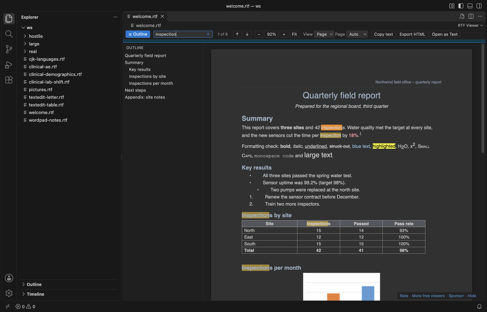
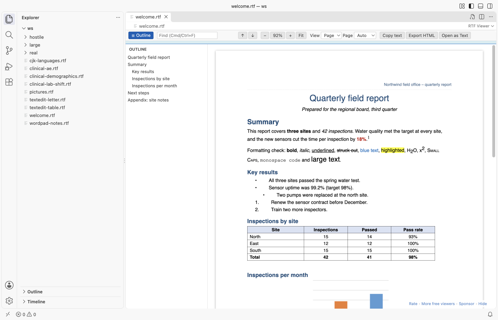

RTF Viewer & Rich Text Viewer (RTF Preview, Dark Mode)
RTF Viewer & Rich Text Viewer (RTF Preview, Dark Mode), a VS Code extension by Zovo
Open .rtf files in VS Code as a read-only page: fonts, colors, tables, pictures, headers and footers, with search, an outline, zoom and dark mode. Free, no sign-in, works offline. It sends nothing anywhere.
Free, MIT license. Needs VS Code 1.90.0 or newer. Extension ID zovo.zovo-rtf-viewer, version 0.2.0.

Questions people ask
Is RTF Viewer & Rich Text Viewer (RTF Preview, Dark Mode) free?
Yes. RTF Viewer & Rich Text Viewer (RTF Preview, Dark Mode) is free and MIT licensed.
How do I install RTF Viewer & Rich Text Viewer (RTF Preview, Dark Mode)?
Click "Install in VS Code" above, or search for zovo.zovo-rtf-viewer in the Extensions view.
Why this one
- Tables look right: Merged cells (across and down), borders, shading, header rows and wide pages. Tables from R, SAS, Word, LibreOffice and TextEdit all open, including clinical tables (TFLs) with spanning headers and repeated page headers.
- It opens the file you have: Word, WordPad, TextEdit and LibreOffice files, code pages (
\ansicpg, font charsets), Unicode, Japanese, Chinese, Korean, Cyrillic and Greek text. Pictures in PNG, JPEG, EMF, WMF and BMP are drawn; anything else shows as a labelled box, never a blank page or a crash. - It stays safe and quiet: No account, no telemetry, no network. Embedded objects (
\object, OLE packages) are never opened or extracted. Links open only after a click, only for web and mail addresses, and VS Code asks first.javascript:andfile:links do nothing.
Features
Reading:
- Page view with the paper width and margins of the document, or Flow view that follows the editor width.
- Page colors: Auto (follows your VS Code theme), Light, Dark and Invert.
- Headers and footers on every page, with page numbers, and footnotes at the end.
Finding things:
- Search with Ctrl+F or Cmd+F. Enter and Shift+Enter move between matches.
- Outline of the headings; click one to jump. Zoom with Ctrl+= and Ctrl+-, or Fit to width.
Working with the file:
- Live reload: when R, SAS or another tool writes the file again, the view updates and keeps your place.
- Copy all text, or export one HTML file with the pictures inside.
- Open as Text shows the RTF source, and a button in the text editor brings you back.


Large files
The file is read in a background thread, so VS Code stays responsive. The first part of the document shows while the rest is still being read, with a progress line. In our test, a 52 MB RTF with 100 pictures showed its first page in about a second, and a 400-page document opened in under 2 seconds (see CHANGELOG for the measured numbers). Files over 200 MB ask first (rtfViewer.maxFileSizeMB). Pictures over 20 MB become a labelled box (rtfViewer.maxImageSizeMB).
Settings
| Setting | Default | What it does |
|---|---|---|
rtfViewer.theme | auto | Page colors: auto, light, dark, invert |
rtfViewer.view | page | page or flow |
rtfViewer.zoom | 1 | 0.3 to 4 |
rtfViewer.maxFileSizeMB | 200 | Larger files ask before they open |
rtfViewer.maxImageSizeMB | 20 | Larger pictures become a box |
rtfViewer.liveReload | true | Reload when the file changes on disk |
rtfViewer.askForRating | true | One rating question after real use, at most twice, never after an error |
rtfViewer.showSupportLinks | true | The small Sponsor and More free viewers links |
Known limits
- Floating text boxes and drawing shapes are shown only through the fallback that Word stores with them.
- Nested tables are shown inside their cell in a simple form.
- Mac PICT and OS/2 pictures cannot be drawn by a browser and show as a box.
.rtfdpackages from TextEdit keep their pictures in the folder; open theTXT.rtfinside to see the text.
Privacy
The viewer has no network access: the webview's content security policy blocks every request, and the extension makes none. Settings and the rating state stay in VS Code.
License
MIT. Third-party code is listed in THIRD-PARTY-NOTICES.md.
Guides
Install RTF Viewer & Rich Text Viewer (RTF Preview, Dark Mode)
Click the button to open VS Code and install it, or press Ctrl+P (Cmd+P on macOS) in VS Code and run ext install zovo.zovo-rtf-viewer.
Free, MIT license. Needs VS Code 1.90.0 or newer. Extension ID zovo.zovo-rtf-viewer, version 0.2.0.
Source code and issues are on GitHub.
Support this work
If this extension saves you time, you can support the work on GitHub Sponsors. Monthly tiers start at $5, and one-time tiers start at $15. Sponsorship is optional, and the tool works the same without it.
Need your format supported?
Open a format request with a sample file, and I reply there whether it can be done. For USD 299 once, through this GitHub Sponsors tier, I add your file format or a missing feature to this extension, with tests, within 7 days.